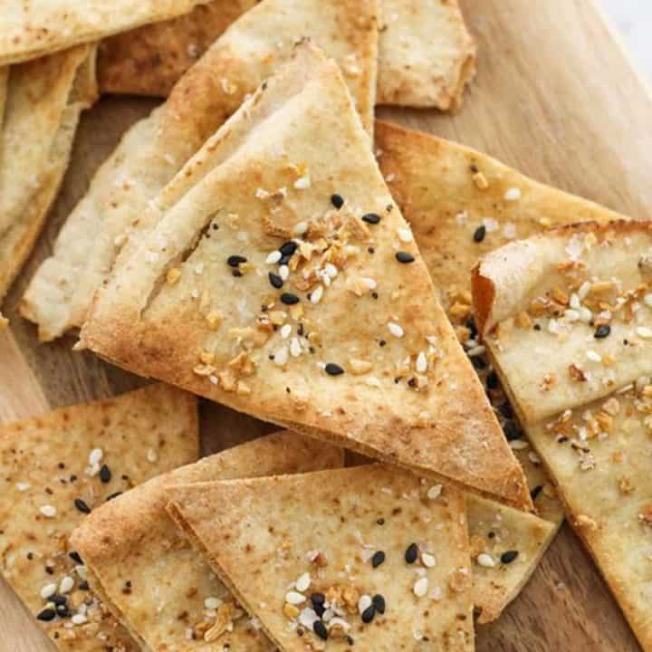

Pita Chips

Ingredients
12 pita bread pockets
1/2 cup olive oil
1/2 teaspoon ground black pepper
1 teaspoon garlic salt
1/2 teaspoon dried basil
1 teaspoon dried chervil
Directions
- Preheat oven to 400 degrees F (200 degrees C).
- Cut each pita bread into 8 triangles. Place triangles on lined cookie sheet.
- In a small bowl, combine the oil, pepper, salt, basil and chervil. Brush each triangle with oil mixture.
- Bake in the preheated oven for about 7 minutes, or until lightly browned and crispy. Watch carefully, as they tend to burn easily!